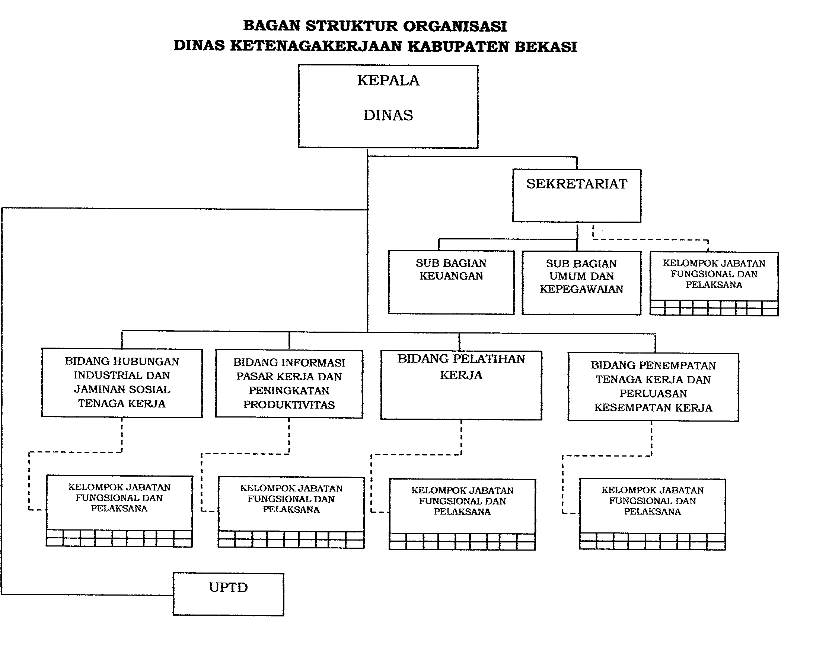

Struktur Organisasi
Struktur Organisasi Dinas Ketenagakerjaan Kabupaten Bekasi berdasarkan Peraturan Bupati Bekasi Nomor 38 Tahun 2016.

Klik untuk
memperbesar
Kepala Dinas
Memimpin pelaksanaan tugas dan fungsi Dinas Ketenagakerjaan.
Sekretariat
Membawahi Sub Bagian Perencanaan, Keuangan, dan Umum & Kepegawaian.
Bidang Penempatan & Perluasan Kerja
Bertanggung jawab atas informasi pasar kerja, penempatan tenaga kerja, dan perluasan kesempatan kerja.
Bidang Pelatihan & Produktivitas
Menyelenggarakan pelatihan kerja dan peningkatan produktivitas tenaga kerja.
Bidang Hubungan Industrial
Menangani syarat kerja, pengupahan, jaminan sosial, dan penyelesaian perselisihan hubungan industrial.